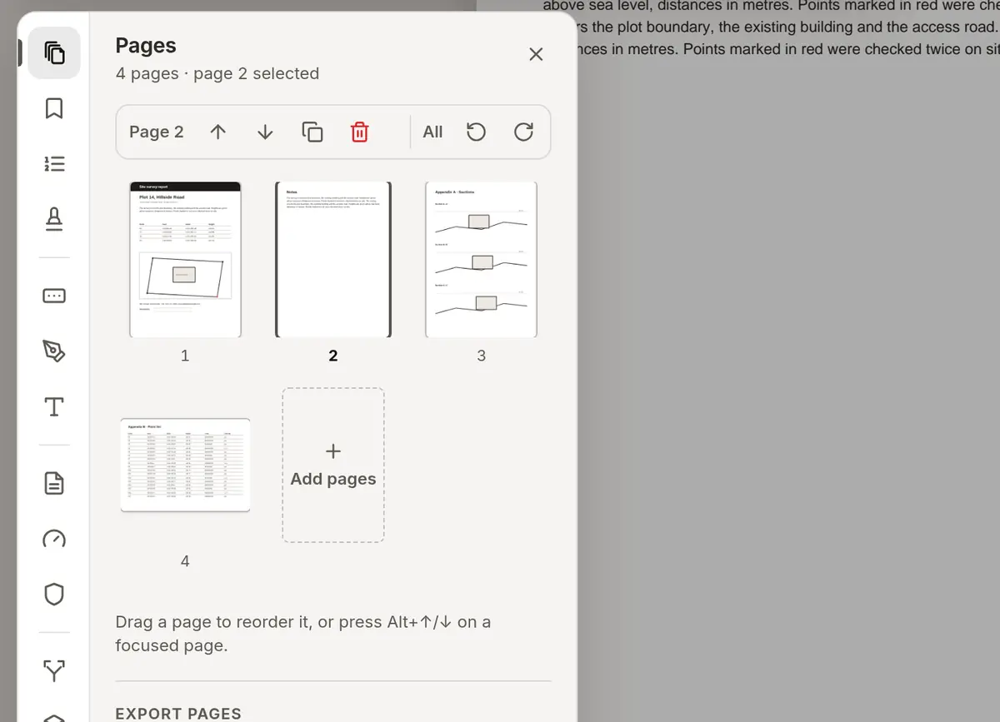

berg:work PDFberg:work PDF
Move anything.Alles verschieben.
Every line of text, every picture and every drawing in a PDF is an object you can grab. Drag the heading somewhere else, pick up a drawing and turn it, retype a word in the document’s own font — then save a normal PDF.Jede Textzeile, jedes Bild und jede Zeichnung im PDF ist ein Objekt zum Anfassen. Die Überschrift woandershin ziehen, eine Zeichnung drehen, ein Wort in der Schrift des Dokuments neu tippen — und dann ein normales PDF speichern.
